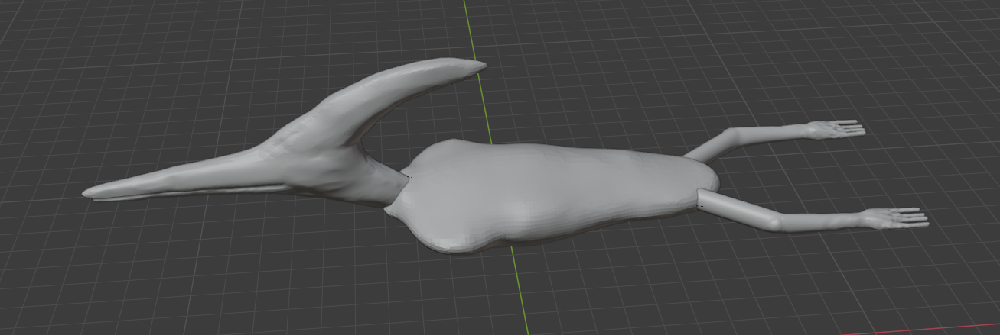
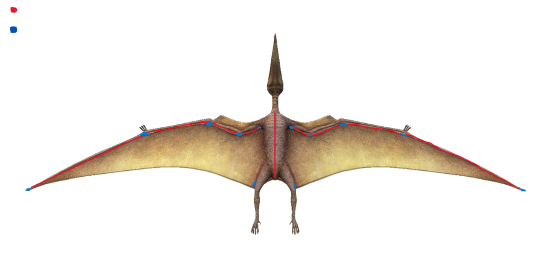
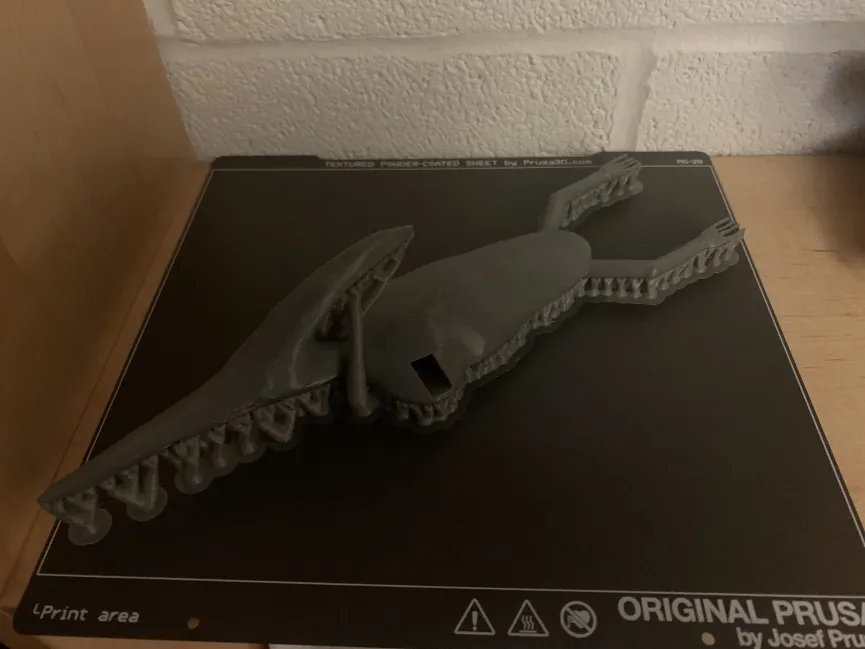
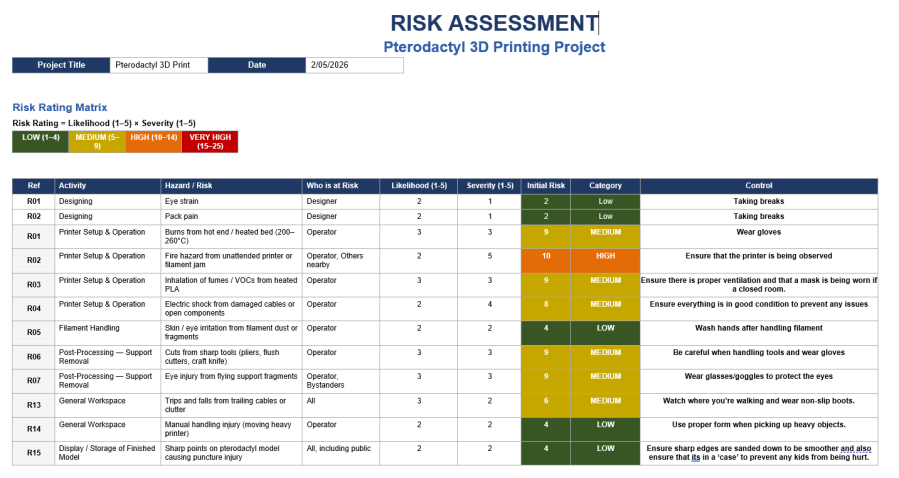

Development Overview
How the portfolio is organised around the four main stages of the project.
This portfolio follows the project through four stages: concept design, product development, pre-production, and post-production/future development. Each stage explains what was explored, what alternatives were considered, why certain decisions were suitable, and what I learned from reviewing or contributing to that part of the process.
1. Concept Design
Why the Pterodactyl concept was suitable and what early alternatives were considered.
2. Product Development
Blender/CAD, mechanism sketches, roller system, skin planning, material choice and cost.
3. Pre-Production
STL preparation, PETG printing, risk assessment, support removal and physical evidence.
4. Post-Production
Finishing, membrane application, testing, future servo actuation and design improvements.
1. Concept Design
Exploring possible project directions and deciding why the Pterodactyl was suitable.
At the concept design stage, different creature and movement ideas were discussed before the Pterodactyl direction was selected. I understood the Pterodactyl to be a strong choice because it was not only visually interesting, but also gave the project clear development challenges: large wings, a flexible membrane, an outer skin, internal support structure and possible movement.
A static model would have been easier to produce because it would mainly involve shape and appearance. However, it would not have allowed much exploration of movement or robotic skin behaviour. A fully rigid 3D printed wing was also possible, but it would not represent the flexible membrane of a Pterodactyl very well. The selected direction was therefore a Pterodactyl body with wings that could later use flexible material and a movement system.
My Reflection
This stage helped me understand that a good concept is not only about how the final model looks. It should also create opportunities for development, testing and decision-making. The Pterodactyl was suitable because it allowed me to think about movement, wing skin, material tension and future actuation rather than only producing a decorative model.
2. Product Development
Comparing design, material, skin and movement options before deciding the current prototype direction.
The product development stage was where the concept became more practical. Different parts of the project were explored by different team members, including Blender/CAD modelling, 3D printing material choice, skin research, risk planning and wing movement. My own contribution focused mainly on motors, servo actuation, strings and elastic thread options. For the other areas, my reflection is based on understanding the decisions and how they affected the overall prototype.
Blender/CAD Modelling
Blender Body Development Video
This video shows the digital model being reviewed before physical manufacturing. It supports the product development stage because it shows how the virtual form was checked before moving towards 3D printing.
Blender/CAD modelling was used to develop the Pterodactyl body and wing form before physical manufacture. The advantage of this approach was that the shape could be viewed, adjusted and prepared digitally before committing to a print. Blender was also suitable because it allowed more organic forms, which suited the Pterodactyl body better than simple block-based modelling.
An alternative would have been 3D scanning or haptic sculpting, but these were less suitable for the current project because the design started digitally and there was no finished physical model to scan. Haptic sculpting could have helped with fine skin texture, but the current priority was producing a manufacturable prototype rather than detailed surface sculpting.
My Reflection
Although I was not the main designer of the Blender model, reviewing the digital design helped me understand why virtual prototyping matters. It allowed the body shape, wing layout and possible mechanism space to be considered before printing. However, I also learned that a digital model alone cannot prove whether the movement, material tension or post-processing will work in reality.
Movement Development: Motors, Strings and Roller Guidance
My main contribution was researching possible ways to make the wings move. I compared a DC motor, servo motor, simple string pulling and elastic thread support. A DC motor could provide continuous rotation, but the disadvantage is that it would need an additional crank or linkage to convert rotation into a wing flap. A servo motor was more suitable for controlled wing movement because it can rotate between set angles, making it easier to create an up-and-down flapping motion.
Simple string movement was also considered because it was easier to demonstrate within the available development time. The advantage of strings is that they are lightweight, low-complexity and suitable for testing movement ideas quickly. The disadvantage is that a direct string pull can create friction, uneven movement or poor alignment if the string rubs against the body or wing frame.
The roller-guided string system was developed as a refinement of the basic string idea. I did not design the roller system by myself, but from reviewing the sketches I understood why it was a better direction. Rollers can guide the string path, reduce friction and make the movement smoother than pulling a string directly across the printed body.
My Reflection
This was one of my main learning points. At first, I thought the most important decision was simply choosing between a motor and a servo. I later realised that wing movement also depends on string routing, roller alignment, friction, attachment points and membrane tension. The final current direction was a roller-guided string system, while servo actuation remains a stronger future improvement once more testing time is available.
Thread and Wing Support Options
As part of my individual contribution, I also looked into different thread and string options for supporting the wing membrane. The options included shirring elastic thread, thin elastic cord, lycra/spandex elastic thread, thin rubber cord and normal sewing thread.
Normal sewing thread would be easy to attach, but it has very little stretch, which could make the wing too stiff or place more load on the movement system. Thin rubber cord would provide stretch, but it may be harder to control neatly and could look less integrated with the wing membrane. Shirring elastic and thin elastic cord were possible options because they are flexible, but I felt spandex elastic thread matched the wing skin better.
I proposed spandex elastic thread because the wing skin was also planned to use spandex. Since both materials are stretchy, they should move together more naturally and allow the wing membrane to flex. The limitation is that the tension must be carefully controlled. If it is too tight, it could resist movement; if it is too loose, the wing may not hold its shape.
My Reflection
This helped me understand that small material choices can affect mechanical performance. The motor or string system is only one part of the movement. The thread, membrane and tension all influence whether the wing can move smoothly.
Interactive Wing Flap Demonstration
Interactive Movement Note
This interactive SVG model is a simplified Pterodactyl-style wing flap demonstration. The slider changes the wing angle to illustrate how the membrane wings could move through an upstroke and downstroke using roller-guided string movement in the current prototype, with servo actuation considered as a future improvement.
3D Printing Material Selection
The project also compared possible 3D printing materials. PLA, ABS and PETG were considered. PLA would have been easy to print and commonly available, but it is more brittle and may crack or shatter more easily. ABS can be stronger and more temperature resistant, but it is harder to print reliably and usually needs more controlled printing conditions.
PETG was selected for the current prototype because it offered a better balance between printability and durability. It is easier to print than ABS while being tougher and less brittle than PLA. This made it suitable for a handled prototype, especially because the model may need post-processing, demonstration and further development.
My Reflection
I did not lead the 3D printing material research, but reviewing the decision helped me understand that material choice is part of product development. The selected filament affects strength, safety, handling and post-processing, not just the appearance of the printed model.
Cost Awareness
Cost was not the reason for rejecting motorised movement, because budget was available for the project. However, recording material cost was still useful as part of product development. It helped show what was used in the current prototype and how practical material decisions were being tracked.
Prototype Cost Breakdown
| Material | Cost per unit (£) | No. unit | Total Cost (£) |
|---|---|---|---|
| Prototype 3D print | 4.50 | 1 | 4.50 |
| Spandex wing membrane | 10.00 | 1 | 10.00 |
| Glue | 5.60 | 1 | 5.60 |
| PETG filament | 2.00 | 1 | 2.00 |
| Final Cost | 22.10 |
Skin and Wing Membrane Planning

The project also explored different skin and membrane options. A fully rigid printed wing would have been easier to keep in shape, but it would not behave like a flexible Pterodactyl membrane. Fabric or spandex was more suitable for the wing membrane because it is lightweight and flexible. A thin silicone layer was considered as a future improvement because it could make the surface look more realistic.
The disadvantage of silicone is that if it is applied too heavily or used to seal the model completely, it could add weight and make the internal mechanism difficult to access. For that reason, selective adhesive points, seam lines, hidden screws or magnetic panels were considered more practical than permanently sealing the skin.
My Reflection
Although skin research was not my main role, it connected directly to my movement research. I learned that the wing material affects how hard the mechanism has to work. A skin that looks realistic but is too stiff or too tightly attached could make the wing movement unreliable.
3. Pre-Production
Moving from virtual design into physical printing and safety planning.

Pre-production involved preparing the design for physical manufacture. The main route selected was PETG 3D printing because it allowed the digital model to become a physical prototype. An alternative would have been to keep the project at only a virtual stage, but that would not reveal practical issues such as support structures, sharp edges, surface finish or handling strength.
The advantage of 3D printing was that it gave a real object that could be inspected and developed further. The limitation was that the printed part still required post-processing, including support removal, sanding and checking for weak or sharp areas. This showed that printing is not the end of the process; it is only the start of physical evaluation.

The risk assessment helped identify hazards linked to printer setup, heated parts, fumes, damaged cables, filament handling, support removal, sharp tools and finished model handling. This made the physical stage more realistic because it considered not only whether the prototype could be made, but whether it could be handled and developed safely.
Physical Prototype Video
This video supports the pre-production stage because it shows the physical prototype evidence after moving from the digital model into 3D printing.
My Reflection
This stage helped me understand the difference between a virtual prototype and a physical prototype. In Blender/CAD, the design can look complete, but the physical print shows the real problems: supports, edges, surface finish, strength, access and safety. I also realised that any future movement system has to be planned around the physical body, not just the digital design.
4. Post-Production and Future Development
Planning finishing, movement testing and the next functional version.
Post-production is currently a planned next step rather than a fully completed stage. The first option would be to focus only on finishing the printed model by removing supports, sanding sharp edges and improving the surface. This would make the model presentable, but it would not fully test the wing movement idea.
A stronger future direction would be to test the roller-guided string system on a smaller wing rig before attaching the final skin. This would allow string tension, roller alignment, membrane resistance and wing movement to be tested without risking damage to the full prototype. After that, servo actuation could be explored as a more controlled movement method.
For the final skin finish, spandex or fabric could be attached first, followed by selective silicone coating if needed. The advantage of silicone is realism, but the disadvantage is that it could reduce access or add stiffness. Grey, brown and dull green tones were considered because they would give the prototype a more natural Pterodactyl appearance.
Final Selected Workflow
Blender/CAD design → mechanism and skin planning → STL preparation → PETG 3D printing → risk assessment and post-processing → spandex/fabric membrane planning → roller-guided string movement for the current prototype → servo actuation as a future improvement.
My Reflection
If I developed the project further, I would not apply the final skin immediately. I would first test the wing mechanism separately, then adjust the string path, roller alignment and membrane tension. This would reduce the risk of covering the mechanism too early and later needing to damage the skin to fix movement problems.